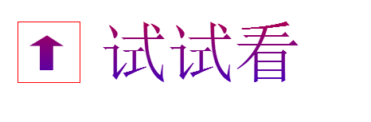
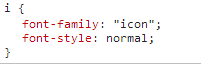

从Font-icon开始聊渐变怎么玩
这是什么玩意?完床没听说过呀!
简单DEMO


实际在今年的webrebuild上的深圳站中有相关的分享，就是用ps做出矢量图后存成EPS，再在AI中删除掉路径外的其他因素，最后将图标编程一个SVG格式的文件，再登录上http://fontello.com/ 将svg制作成字体文件。后就能用字体把icon表现出来
虽然这个demo做得lao了一点，但是这也能看出来font-icon的好处，可以自由地换色，甚至是渐变。缺点自然是制作过程比较麻烦，而且如果需要兼容的话需要制作四种以上的字体文件。
谈到渐变你会想到什么？比如？
通过background-clip来实现很old的字体渐变
将字体颜色设置为透明，然后用background-clip来将渐变的背景"切"成文字。渐变与前面的伪类，3d变换和box-shadow合体也许能激发出更多的创意，不如动手试一下。